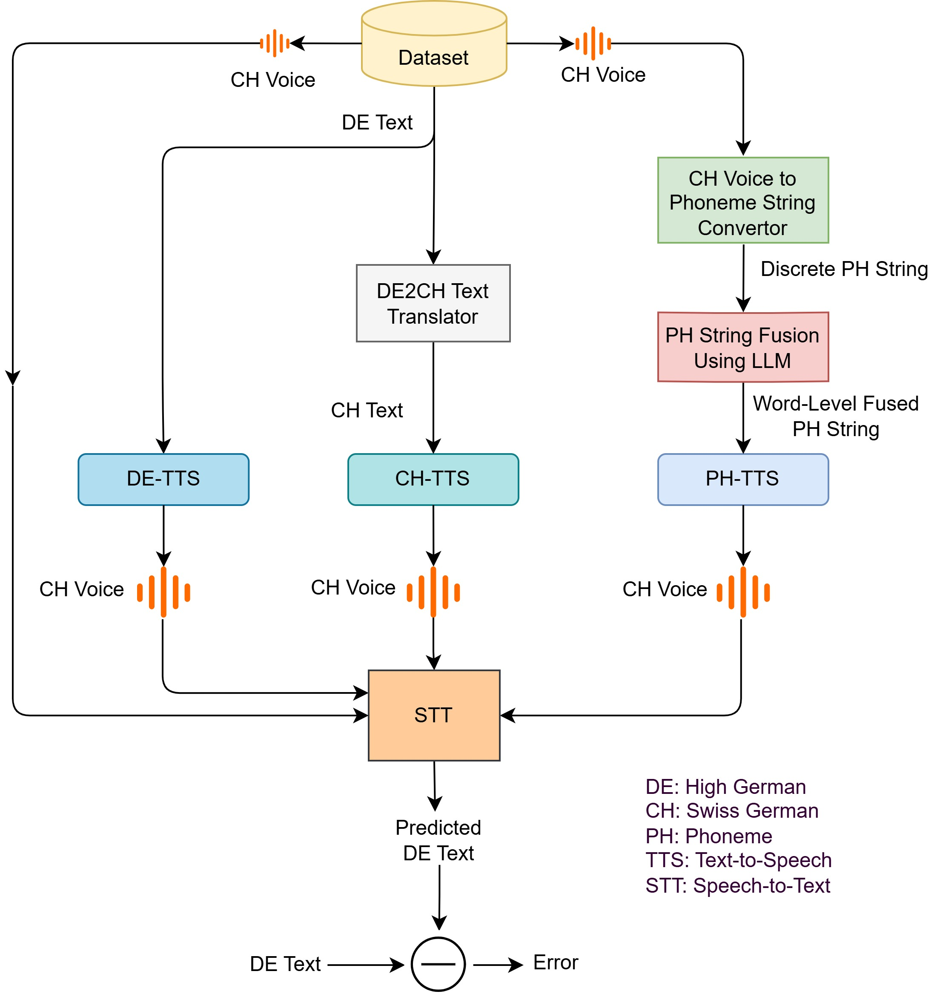
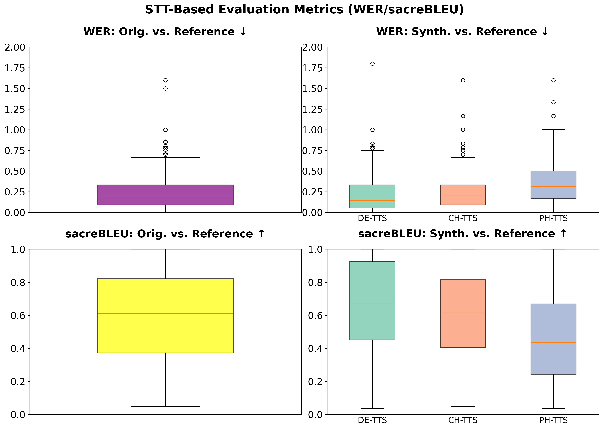

DE-TTS
Use High German text directly as the conditioning input for Swiss German speech.
Low-resource Swiss German TTS
Institute for Data Science, School of Computer Science, FHNW
Swiss German has no standardized orthography, while practical user input is often written in High German. This paper asks which intermediate representation should sit between High German input and Swiss German speech: High German text, Swiss German text, or phoneme strings.
Experiment
The same task is evaluated through three different intermediate representations. The pipeline figure shows where translation, phoneme conversion, synthesis, and closed-loop STT scoring enter the system.
Use High German text directly as the conditioning input for Swiss German speech.
Translate High German to Swiss German text first, then synthesize Swiss German speech.
Convert speech-derived phoneme supervision into fused word-level phoneme strings.

Backbones
The paper fine-tunes two contrasting TTS backbones to separate representation effects from synthesis capacity.
A lightweight encoder-decoder baseline for data-efficient fine-tuning.
A Llama-based speech generation model used as the stronger synthesis baseline.
Orpheus is also trained with half the data to test robustness under lower supervision.
Results
Closed-loop STT metrics are useful diagnostics, but they do not fully match human preference. MOS consistently ranks CH-TTS highest among synthesized systems.
Highest listener preference for both SpeechT5 and Orpheus.
Close to original recordings at 4.04 MOS.
Near-original quality compared with 4.86 MOS for real recordings.
Most stable Orpheus branch when training data is reduced.

Interpretation
PH-TTS is not evaluated as an oracle phoneme condition. Its phoneme strings are automatically inferred from audio and then fused into compact strings, so upstream noise and representation mismatch directly affect synthesis quality.
Noisy audio-derived phonemes plus discrete-to-fused conversion errors.
Predict fused phoneme strings directly and use a phoneme-native tokenizer.
For now, CH-TTS with Orpheus offers the best quality and robustness trade-off.
Citation
@inproceedings{kakooee2026swisstext,
title = {Text vs. Phoneme Intermediates for Low-Resource Swiss German Text-to-Speech},
author = {Kakooee, Reza and Timmel, Vincenzo and Perruchoud, Daniel and Graber, Michael and Vogel, Manfred},
booktitle = {Proceedings of SwissText},
year = {2026}
}